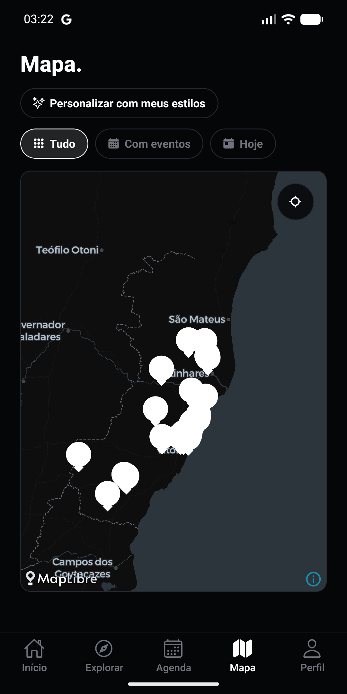

Encontre seu próximo rolê
Explore eventos e consulte a agenda por data. Veja onde acontece, os horários e os links de ingresso disponíveis.
FEITO NO ESPÍRITO SANTO
Você vive o rolê. A Ponte mostra o caminho. Descubra eventos, conheça artistas e encontre os espaços que fazem a cultura acontecer.
Conheça o aplicativoAplicativo gratuito · Em preparação para o Google Play

ENCONTRE SUA CENA.
MÚSICA · TEATRO · ARTE · CINEMA · CULTURA CAPIXABA
O APLICATIVO
A programação cultural da região e quem faz parte dela, perto de você.
Explore eventos e consulte a agenda por data. Veja onde acontece, os horários e os links de ingresso disponíveis.
Descubra espaços culturais no mapa e veja a programação dos lugares que você quer visitar.
Conheça os perfis, acompanhe posts e veja os stories de quem movimenta a cena cultural.
Salve eventos, organize suas listas e escolha seus estilos. Entre na conta para levar seus salvos com você.
Explore sem criar conta. Faça login quando quiser salvar ou publicar.
PARA QUEM FAZ CULTURA
Crie o perfil do seu artista ou projeto cultural. Apresente seu trabalho com fotos, publique posts e compartilhe os bastidores nos stories.
A Ponte aproxima artistas e público para dar mais espaço à cultura do Espírito Santo.
Fale com a PonteVAMOS CONVERSAR
Dúvidas sobre o aplicativo, sugestões ou pedidos de suporte? Fale com a gente por e-mail.
gillezin@gmail.comO aplicativo está em preparação para publicação no Google Play. O link oficial de download será adicionado aqui quando estiver disponível.